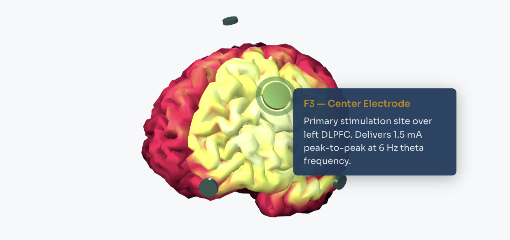
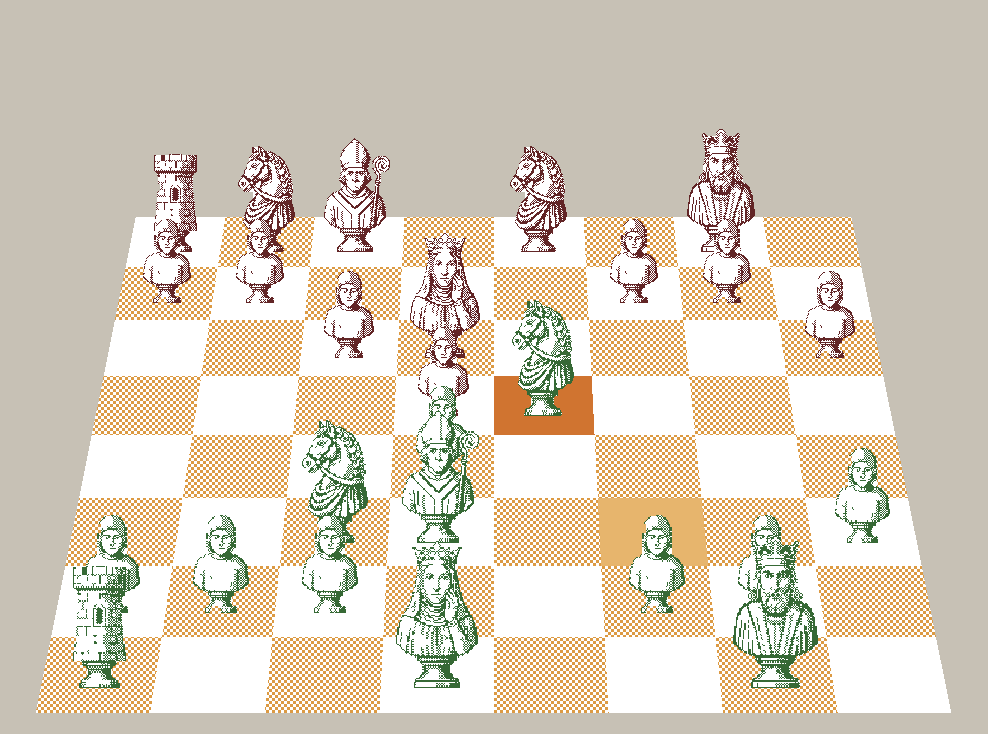
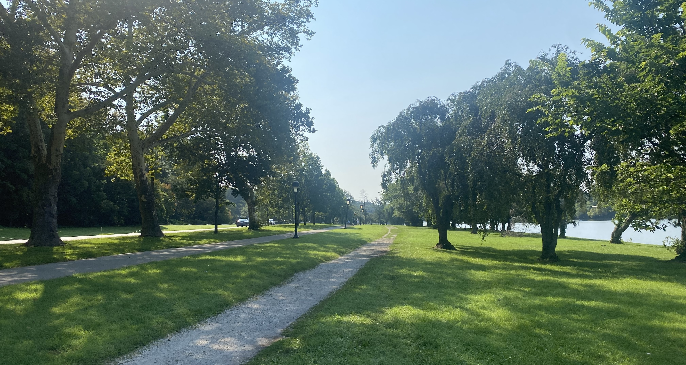

Projects
Work in progress, teaching tools, and things I make outside the lab.

Current Work
My dissertation: how cognitive flexibility declines with age, and whether noninvasive brain stimulation can help restore it.
Understanding Oscillations
An interactive module on how a weak oscillating current can capture a brain rhythm that's already there.

Chess Analyzer
My Chess.com games ranked by accuracy, not just wins and losses, with a featured game you can step through.

Art
Drawings and paintings, mostly oil and pastel, with a bias toward favorites from the last few years.